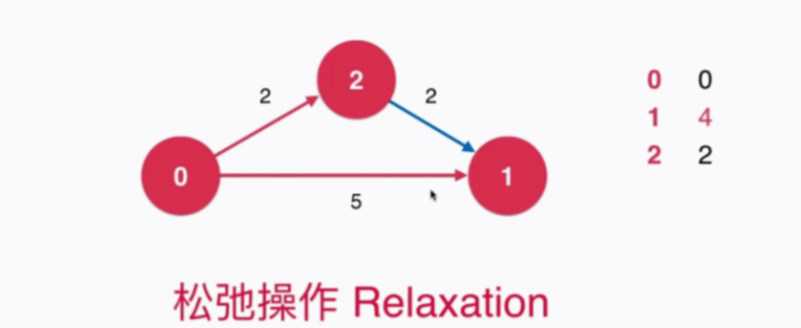
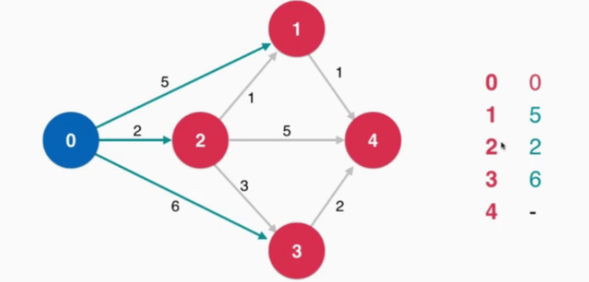
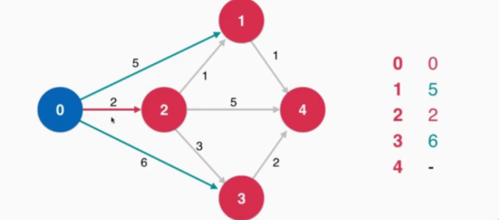
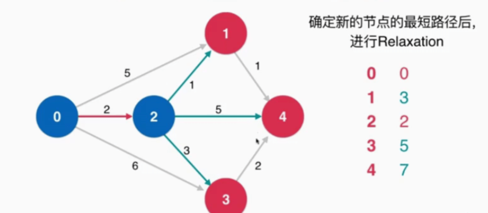
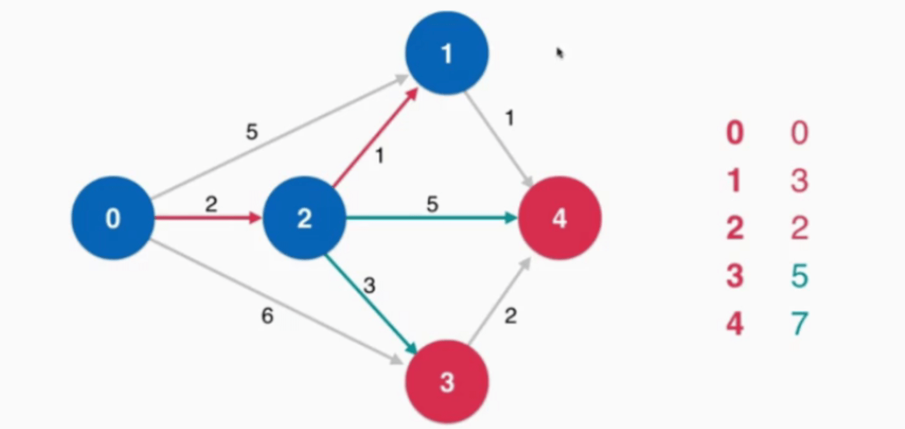
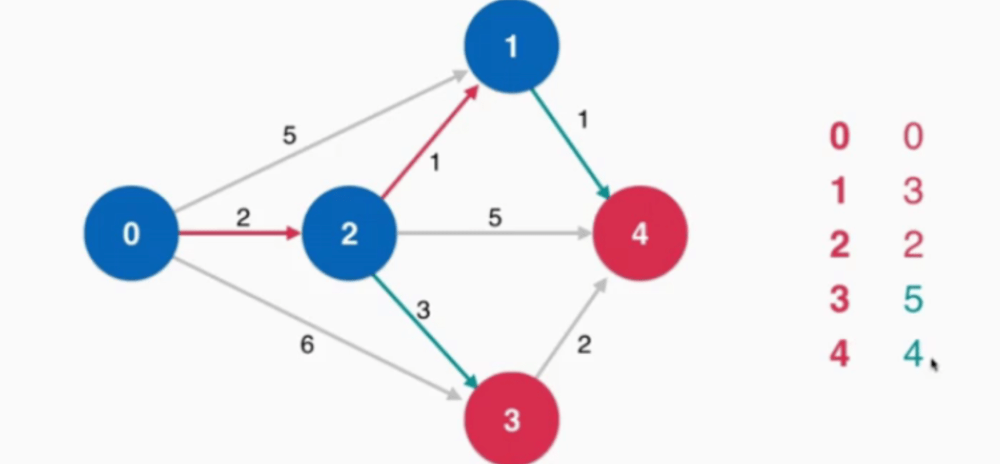
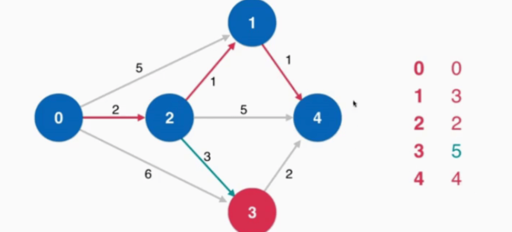
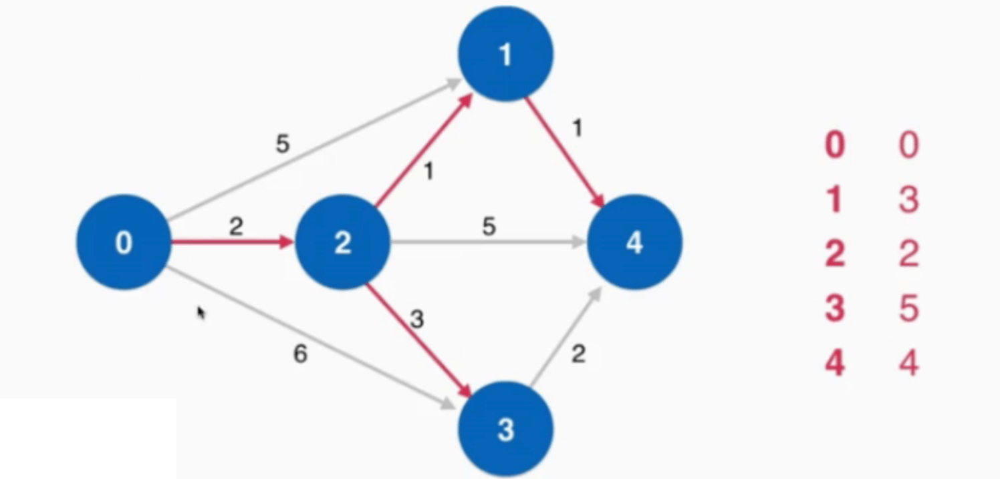

最短路径问题 Shortest Path
广度优先遍历
最短路径树 Shorted Path Tree
单源最短路径 Single Shorted Path Tree。
无权图的最短路径和带权图的最短路径不同，带权图需要考虑松弛操作（Relaxation）。

松弛操作是最短路径求解的核心。
Dijkstra 单源最短路径算法
前提：不能有负权边。
生活中大部分的图，是不存在负权边的。
复杂度：$O(Elog(V))$
借助最小索引堆。
初始，对起点进行标识，对它所有的邻边进行访问。

接下来就 Dijkstra 算法非常重要的一步。此时找到没有访问的顶点中，能够以最短的方式抵达的那个顶点，此时源点到达此顶点的最短路径确定。如下图 0 —> 2 的最短路径就是 2。

因为 0 到其他顶点的花费都高于 2，此时再折回来时，花费只会更大。（图中没有负权边）
确定新的节点的最短路径后，进行 Relaxation 操作。遍历新节点 2 的所有邻边，经过中转站 2 到达 1 比 0 直接到达 1 花费更少，此时更新花费。

此时从未访问的所有顶点中找出花费最小的顶点，就是源点到此节点的最短花费。

对 1 节点进行松弛操作。以 1 为中转站更新。

此时就 3、4 节点未访问，取最小花费的节点 4，确定最短路径。

对 4 所有的邻边进行松弛操作。从 4 无法到达任何节点，此时不需要进行任何松弛操作。
最后只有 3 这个节点没有被访问过，这就找到了从源点到 3 的最短路径。

实现细节
IndexMinHeap 获取最小边的时间复杂度为 $log(V)$。
对所有的边进行操作，最后的时间复杂度就是 $Elog(V)$ 。
#include <iostream>
#include <queue>
#include <cstdio>
using namespace std;
const int n = 12;
#define inf INT32_MAX
int min_distance(int dist[], bool visited[]) {
// Initialize min value
int min = INT32_MAX, min_index;
for (int v = 1; v < n; v++)
if (visited[v] == false && dist[v] <= min) {
min = dist[v];
min_index = v;
}
return min_index;
}
// A utility function to print the constructed distance array
void print_solution(int dist[], int s) {
printf("s -> d : Distance from Source to destination\n");
for (int i = 1; i < n; i++) {
if (dist[i] == inf)
printf("%d -> %d: inf\n", s, i);
else
printf("%d -> %d: %d\n", s, i, dist[i]);
}
}
void dijkstra(int g[n][n], int s) {
bool visited[n] = {false}; // 初始化所有顶点未访问
int dist[n]; // dist[i] is shortest distance from s to i
for (int i = 0; i < n; ++i)
dist[i] = INT32_MAX;
dist[s] = 0; // Distance of source vertex from itself is always 0
for (int i = 0; i < n; ++i) {
int u = min_distance(dist, visited);
visited[u] = true;
for (int v = 1; v < n; ++v) {
if (!visited[v] && g[u][v] && g[u][v] != inf && (dist[u] != INT32_MAX) && dist[u] + g[u][v] < dist[v])
dist[v] = dist[u] + g[u][v];
}
}
print_solution(dist, s);
}
int main() {
// int c[n][n] = { {0,0,0,0,0,0},
// {0,0,2,3,5000,5000},
// {0,5000,0,1,2,5000},
// {0,5000,5000,0,9,2},
// {0,5000,5000,5000,0,2},
// {0,5000,5000,5000,5000,0}};
// int c[n][n] = { {0,0,0,0,0},
// {0,0,2,3,5000},
// {0,5000,0,1,2},
// {0,5000,5000,0,9},
// {0,5000,5000,5000,0}};
int c[n][n] = { {0,0,0,0,0,0,0,0,0,0,0,0},
{0,0,2,3,4,inf,inf,inf,inf,inf,inf,inf},
{0,inf,0,3,inf,7,2,inf,inf,inf,inf,inf},
{0,inf,inf,0,inf,inf,9,2,inf,inf,inf,inf},
{0,inf,inf,inf,0,inf,inf,2,inf,inf,inf,inf},
{0,inf,inf,inf,inf,0,inf,inf,3,3,inf,inf},
{0,inf,inf,inf,inf,inf,0,1,inf,3,inf,inf},
{0,inf,inf,inf,inf,inf,inf,0,inf,5,1,inf},
{0,inf,inf,inf,inf,inf,inf,inf,0,inf,inf,3},
{0,inf,inf,inf,inf,inf,inf,inf,inf,0,inf,2},
{0,inf,inf,inf,inf,inf,inf,inf,inf,2,inf,2},
{0,inf,inf,inf,inf,inf,inf,inf,inf,inf,inf,0}}; //邻接矩阵
dijkstra(c, 1);
return 0;
}
参考资料
-
慕课网-Play-with-Algorithm